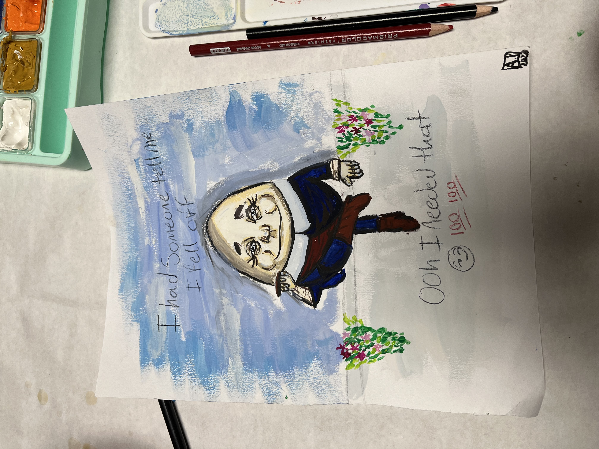
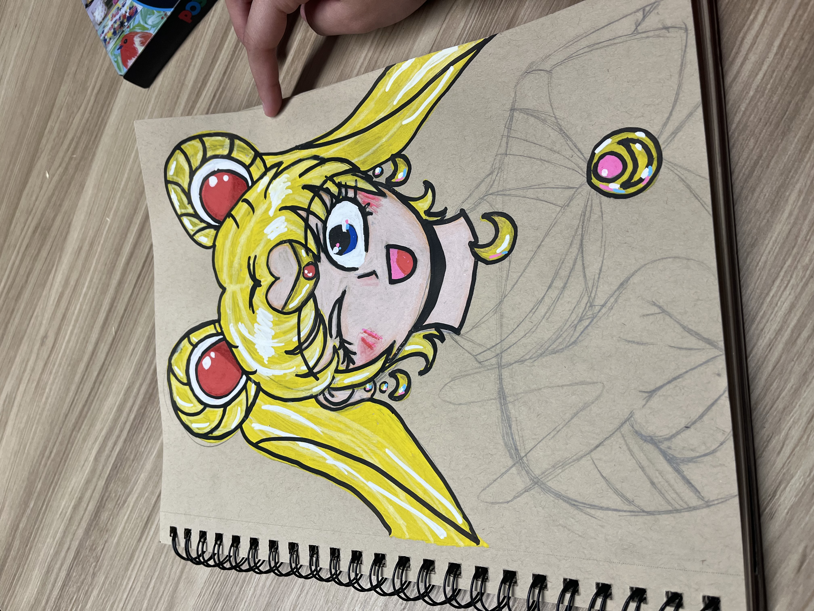
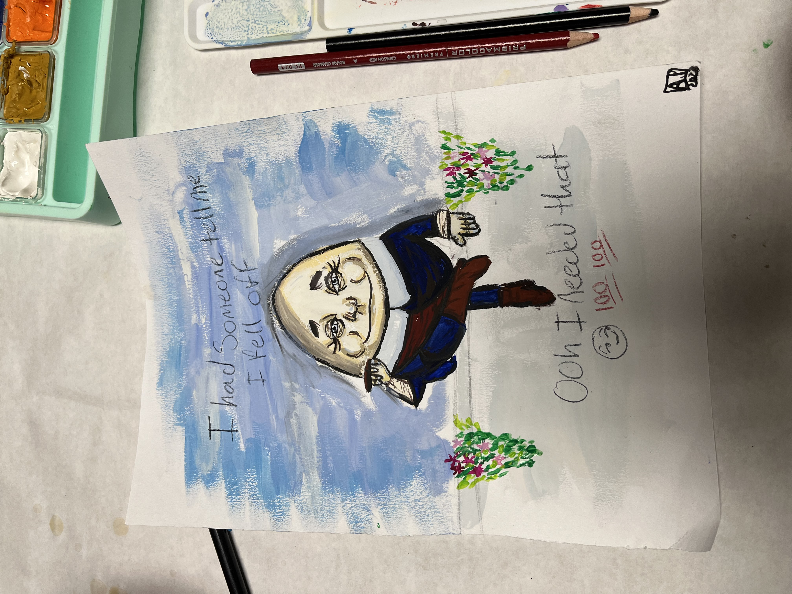
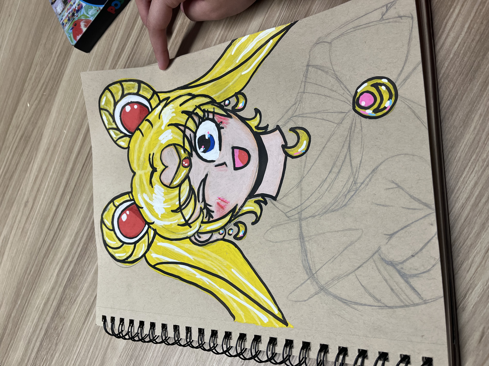

Alice Parra Rios
Alice Parra Rios is a first year political science major at UCR. They also have plans of pursuing a minor in public policy and potentially a certificate of animation from RCC. They currently are working an on-campus job at a restaurant called The Barn, and are part of concert band, tennis club, and ASUCR as a senate mentee. They love the arts, including theater, band, illustration, singing and dancing. They were first introduced to the world of political science through their friend, and have since then always wanted to be involved in the world of political science. They have hopes that they will be able to get into UCLA’s school of law in hopes of becoming an immigration attorney.
They have previous work experience from places such as McDonald’s, The Barn and an internship under Dr. Raul Ruiz. In the position at McDonald’s, they were able to learn how to operate the cash register, manage funds, demonstrate exceptional customer service, provide cleaning services, provide restocking services, and demonstrate control in a fast paced environment. In the position at The Barn, they learned how to operate the ordering kiosk, manage the hot food and salad stations, provide cleaning services, service the chicken sandwich and burger stations, filled in positions as needed, and conducted work with fellow employees in order to provide excellent service. In their internship under Dr. Raul Ruiz, they learned how to assist with planning and preparation for campaign events, conduct voter registration efforts, monitor the campaign’s mail and phone outreach programs, evaluate donor research and assistance with the fundraising team, update and organize the campaign
database, and evaluated the Congressman’s development plan.
They have been enjoying their time at UCR. They have made sure that they always give it their all in every single class and do all that is assigned. They have made sure that they can improve their time management skills in order for assignments to be done stress free.
Internships provide individuals with the chance to work in a professional environment that aligns with their academic or career goals. They allow students and recent graduates to gain hands-on experience in a specific industry or field and to learn from experienced professionals. Through internships, individuals can develop technical, interpersonal, and organizational skills that are critical to success in the workplace. For example, interns may learn how to use specific software or equipment, collaborate effectively with others, manage their time and workload, and communicate professionally.
Fast food jobs, on the other hand, offer individuals the chance to learn transferable skills that can be useful in a variety of settings. Working in fast food requires individuals to be quick, efficient, and customer-focused. It can help develop skills such as multitasking, communication, problem-solving, teamwork, and time management. Fast food jobs can also help individuals develop a strong work ethic, as they often involve long hours, hard work, and the need to stay focused under pressure.
Overall, internships and fast food jobs are valuable work experiences that can help individuals learn and develop critical skills that can benefit them in their future careers.
Experience
Intern
• Managed emails
• Managed calls
• Evaluated congressman's plan
• Volunteer work for events
Education
UC Riverside
Portfolio
.JPG)


 